Papers that apply persistent homology to stock prices (Gidea & Katz 2018 and everything that follows it) all run the same sequence of steps before any data is analysed:
log returns → sliding-window point clouds → Vietoris–Rips → $H_1$ diagram → persistence landscape → $L^p$ norm → rolling variance / autocorrelation / spectral power → Kendall $\tau$.
This note asks, for each step, why this and not something else, and answers with a small experiment on point clouds. Every figure comes from
06_method_walkthrough.ipynb, which you can rerun.
Builds on study notes 1 (homology) and 2 (persistent homology). No analysis results here; only definitions and the reasons behind them.
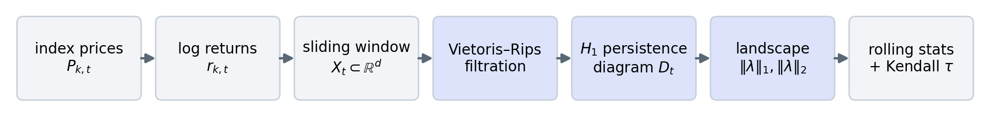
| step | the question | section |
|---|---|---|
| log returns, one point per day | why not prices? why must the axes be comparable? | 1 |
| sliding window of $w$ days | why a window at all, and why $w\approx50$? | 2 |
| Vietoris–Rips, Euclidean, $H_1$ | why Rips and not Čech? why loops and not components or voids? | 3 |
| persistence landscape | why not work with the diagram directly? | 4 |
| $\|\lambda\|_1$, $\|\lambda\|_2$ | why a norm, why these two, and what does it secretly measure? | 5 |
| rolling variance, ACF(1), low-frequency power; Kendall $\tau$ | why statistics of the norm instead of the norm? why a trend test, and why it needs a null? | 6 |
| the whole thing on real data; alternatives | what each stage outputs; Wasserstein change; zigzag | 7–8 |
A price series is a curve. Persistent homology needs a set of points with a distance. The construction in the paper is: one point per trading day, whose coordinates are the returns of several indices on that day. For the distance between two days to mean "how differently did the market move on those two days", two conditions must hold.
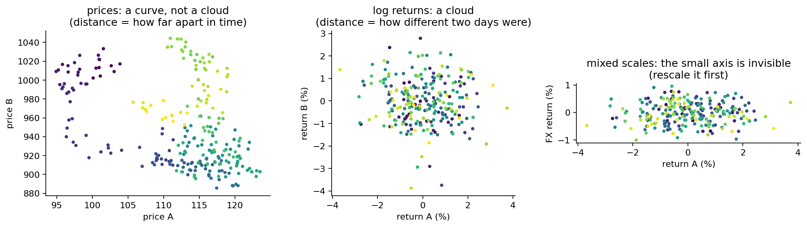
Persistent homology summarizes one set. To get a time series of summaries we need a set for every day: the last $w$ days, $X_t=\{x_{t-w+1},\dots,x_t\}$. Sliding $t$ one day at a time gives one cloud, one diagram and one number per day. The only free choice is $w$, and it is a trade-off:
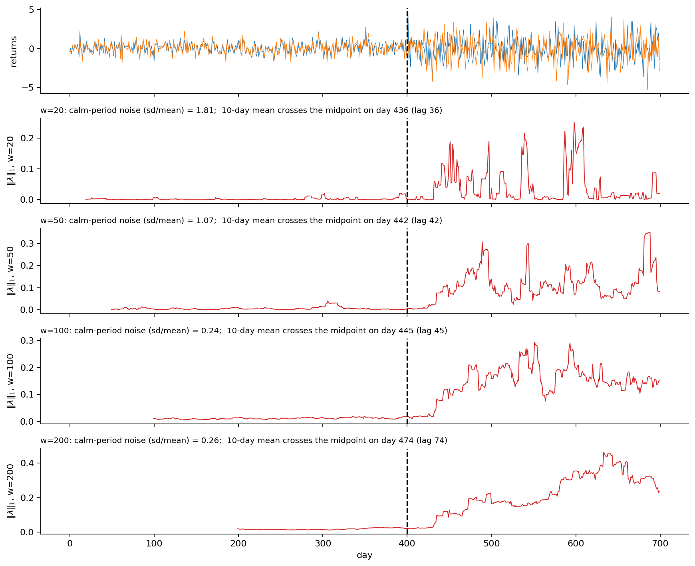
| $w$ | calm-period noise (sd/mean) | detection lag (days) |
|---|---|---|
| 20 | 1.81 | 36 |
| 50 | 1.07 | 42 |
| 100 | 0.24 | 45 |
| 200 | 0.26 | 74 |
Noise falls and lag rises with $w$. The paper's $w=50$ (about one trading quarter) and the robustness check $w=100$ sit where both are acceptable. There is no theory that fixes $w$; it is chosen by this kind of experiment, and results should always be reported for at least two values.
Rips, not Čech. The Čech complex is the one the nerve theorem justifies, but building it requires testing whether $k+1$ balls have a common point. The Rips complex needs only the distance matrix and sits between two Čech complexes, $\check C_{\epsilon/2}\subseteq R_\epsilon\subseteq\check C_\epsilon$, so its diagram can be off by at most a factor 2 in scale (study note 2, Section 1). For 50–100 points per day over 7,000 days, that is a good trade.
Euclidean distance. Once the axes are comparable (Section 1), the Euclidean distance between two days is the natural "how differently did the indices move". Other choices exist (correlation distance between windows, Mahalanobis) and change what a loop means; the paper keeps the simplest one.
$H_1$, not $H_0$ or $H_2$. The $H_0$ barcode of a Rips filtration is single-linkage clustering: its bars are nearest-neighbour distances, which mostly measure how spread out the cloud is, i.e. volatility. $H_2$ (voids) needs far more points than a 50-day window has in 3–4 dimensions. $H_1$ is the lowest dimension that sees shape beyond spread: a persistent loop means the joint returns circled around an empty region instead of filling a blob.
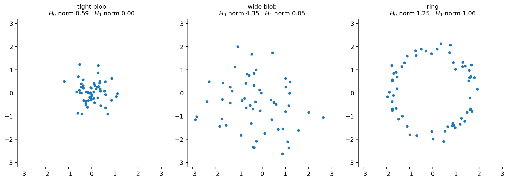
A persistence diagram is a multiset of points. You cannot add two diagrams, take the mean of twenty, or compute the variance of a sequence of diagrams over time; and the paper needs exactly those operations (Section 6). Bubenik's landscape converts the diagram into a function $\lambda=(\lambda_1,\lambda_2,\dots)$: for each point $(b,d)$ draw the tent $f(\epsilon)=\max(0,\min(\epsilon-b,d-\epsilon))$ and let $\lambda_k(\epsilon)$ be the $k$-th largest tent at $\epsilon$. Functions live in a vector space, so averages, norms and confidence bands make sense, and the conversion is stable: $\sup_\epsilon|\lambda_k-\lambda'_k|\le d_B(D,D')$.
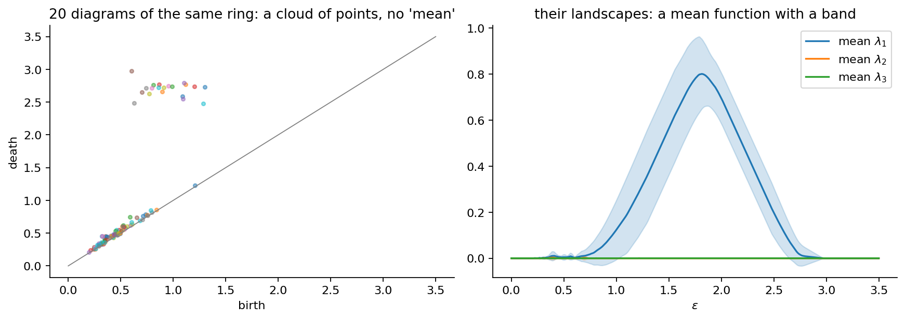
Other vectorizations exist (Betti curves, persistence images). The landscape is the paper's choice because it loses no information (the diagram can be recovered from it), has the stability result above, and has simple closed-form norms, which is the next step.
The norm $\|\lambda\|_p=\big(\sum_k\int|\lambda_k(\epsilon)|^p\,d\epsilon\big)^{1/p}$ collapses the landscape to one number per day. With lifetimes $\ell_j=d_j-b_j$ the integrals of the tents give
$$\|\lambda\|_1=\tfrac14\sum_j\ell_j^2,\qquad \|\lambda\|_2=\Big(\tfrac1{12}\sum_j\ell_j^3\Big)^{1/2}.$$So $\|\lambda\|_1$ counts every loop, weighted by the square of its lifetime, and $\|\lambda\|_2$ is dominated by the longest bars. In the notebook, adding twenty short loops (lifetime 0.2) to one long loop (lifetime 1.8) raises $\|\lambda\|_1$ by 25% and $\|\lambda\|_2$ by 1.4%. The paper reports both because they answer slightly different questions, "how much loop structure overall" and "is there one big loop"; in practice they move together, $\|\lambda\|_1$ being the noisier.
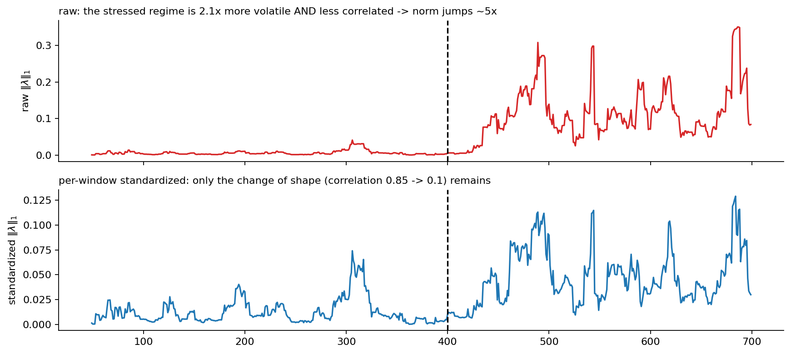
| option | what it does | side effect |
|---|---|---|
| nothing (Gidea & Katz) | norm = shape $\times$ scale | must always be compared with a volatility measure |
| global $z$-score of each axis (the LAMP report) | makes axes of different units comparable | uses the whole sample's mean and sd (look-ahead); does not remove time-varying volatility |
| per-window standardization | norm = shape only | throws away the scale information, which may itself be part of the signal |
None of the three is wrong; they measure different things. What matters is to know which one a plot shows.
The paper does not use the norm itself as the warning signal. It uses three rolling statistics of the norm series, borrowed from the theory of critical slowing down (Scheffer et al. 2009): as a dynamical system approaches a tipping point, it recovers more slowly from small shocks, so its fluctuations become larger (variance $\uparrow$), more persistent (lag-1 autocorrelation $\uparrow$) and slower (low-frequency spectral power $\uparrow$).
$$\hat\sigma^2_t=\tfrac{1}{L-1}\sum_{s=t-L+1}^{t}(y_s-\bar y_t)^2,\qquad \hat\rho_t(1)=\frac{\sum_s(y_s-\bar y_t)(y_{s-1}-\bar y_t)}{\sum_s(y_s-\bar y_t)^2},\qquad \bar S_t=\tfrac{1}{|\Omega_{\rm low}|}\sum_{\omega\in\Omega_{\rm low}}\hat S_t(\omega).$$The cleanest model of a system approaching a tipping point is an AR(1) process $y_t=\phi\,y_{t-1}+\varepsilon_t$ whose $\phi$ drifts toward 1 (at $\phi=1$ shocks never decay).
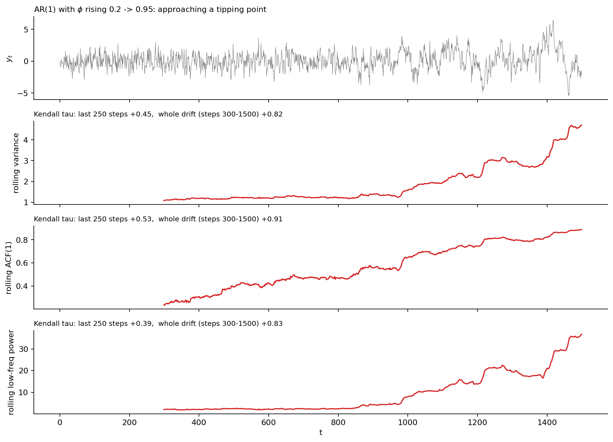
Why Kendall $\tau$. For a statistic $z$ over days $t=1,\dots,n$, $\tau$ is the share of pairs $s<t$ with $z_s<z_t$ minus the share with $z_s>z_t$. It is a rank statistic: it ignores the size of $z$ and outliers and only asks "is it going up?". $\tau=1$ means a monotone increase. It is the standard trend test in the early-warning literature, which is why the paper uses it.
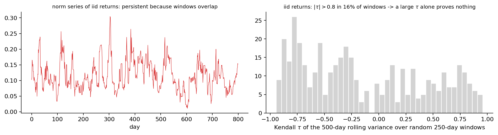
The consequence for any application: a pre-crash $\tau$ must be reported together with the distribution of $\tau$ over random windows of the same series (an empirical $p$-value). The original paper does not do this.
To see what each stage actually outputs, the notebook takes KOSPI / KOSPI 200 / KOSDAQ returns for 2019–2020 and shows a calm and a stressed 50-day window.
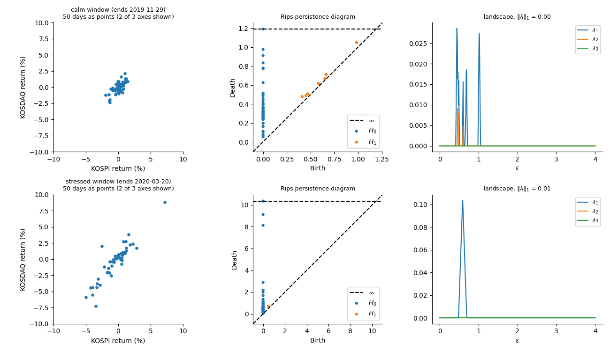
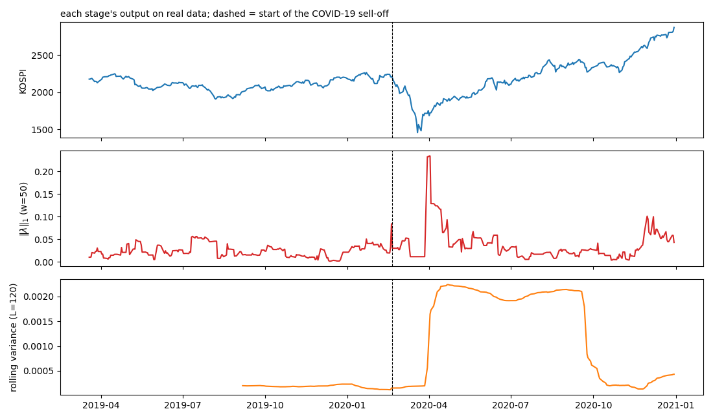
Level versus change: Wasserstein distance. The norm measures the level of loop structure in a window. The Wasserstein distance $W_p(D_t,D_{t+1})$ between consecutive diagrams measures how much the structure changed from one day to the next; points can be matched to the diagonal, so births and deaths count too. The two are complementary: a window can have a high but stable norm, or a low but rapidly changing one. In the notebook their correlation over 2019–2020 is only 0.21.
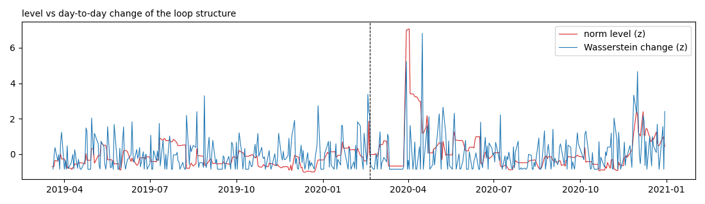
Zigzag persistence. Standard persistence needs a nested sequence $K_1\subseteq K_2\subseteq\cdots$. Consecutive sliding windows are not nested: each day one point leaves and one enters. Zigzag persistence (Carlsson & de Silva 2010) allows arrows in both directions, $K_1\to K_1\cup K_2\leftarrow K_2\to\cdots$, and still has a well-defined barcode. The "union trick" in the LAMP report, standard persistence of $X_t\cup X_{t+1}$, computes exactly the middle object of this zigzag. With windows that overlap in 49 of 50 points the union is almost the same cloud as either window, which is why that report saw no difference. The notebook shows where zigzag would matter: with non-overlapping 25-day clouds, 16% of single clouds contain no loop at all while every union of two consecutive clouds does, and the union's norm is twice as large.
| step | why | what to watch |
|---|---|---|
| log returns, one point per day | comparable across time and axes | rescale axes with different units |
| sliding window $w\approx50$ | one cloud per day; enough points for loops, short enough to react | small $w$ = noise, large $w$ = lag; report two values |
| Vietoris–Rips, Euclidean | needs only distances; within a factor 2 of Čech | convention: edge if $d\le\epsilon$ |
| $H_1$ | lowest dimension that sees shape beyond spread | $H_0\approx$ volatility, $H_2$ needs more points |
| landscape | a function: can be averaged, has norms, is stable | drop the infinite $H_0$ bar |
| $\|\lambda\|_1$, $\|\lambda\|_2$ | one number; $L^1$ counts all loops, $L^2$ the big ones | scales with volatility squared |
| rolling variance / ACF / low-frequency power | critical slowing down before a transition | lags by $L$; needs a long $L$ to be smooth |
| Kendall $\tau$ | rank-based trend test | persistent series make large $|\tau|$ common: always report random-window $\tau$ |
References. M. Gidea, Y. Katz (2018), Physica A 491. P. Bubenik (2015), JMLR 16. M. Scheffer et al. (2009), Nature 461. G. Carlsson, V. de Silva (2010), "Zigzag persistence", Found. Comput. Math. 10.
H. Edelsbrunner, J. Harer (2010), Computational Topology. Code: 06_method_walkthrough.ipynb, tda_utils.py.